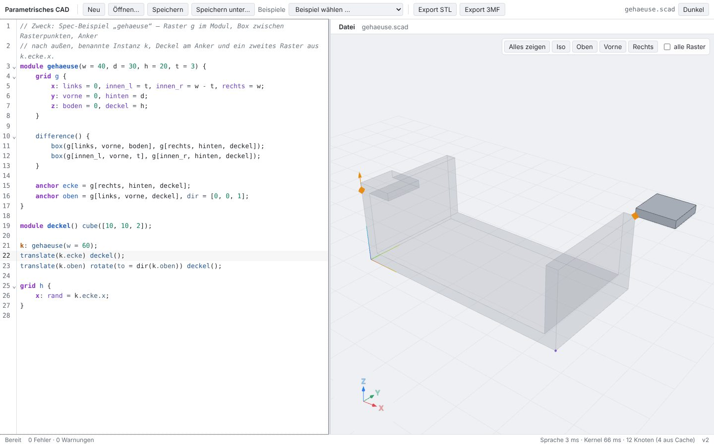
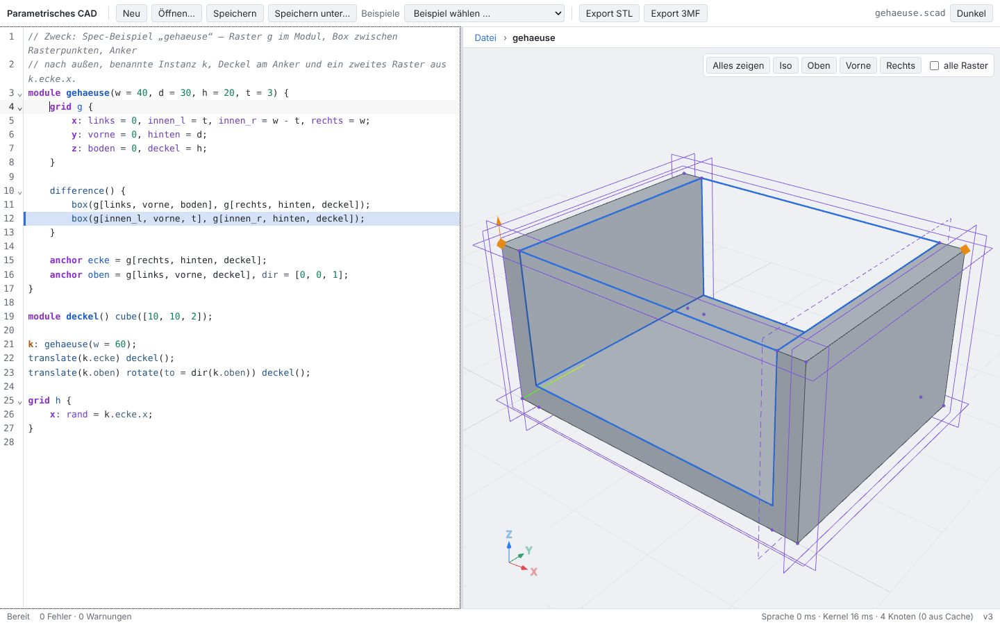
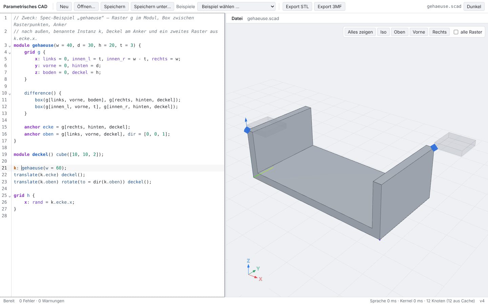
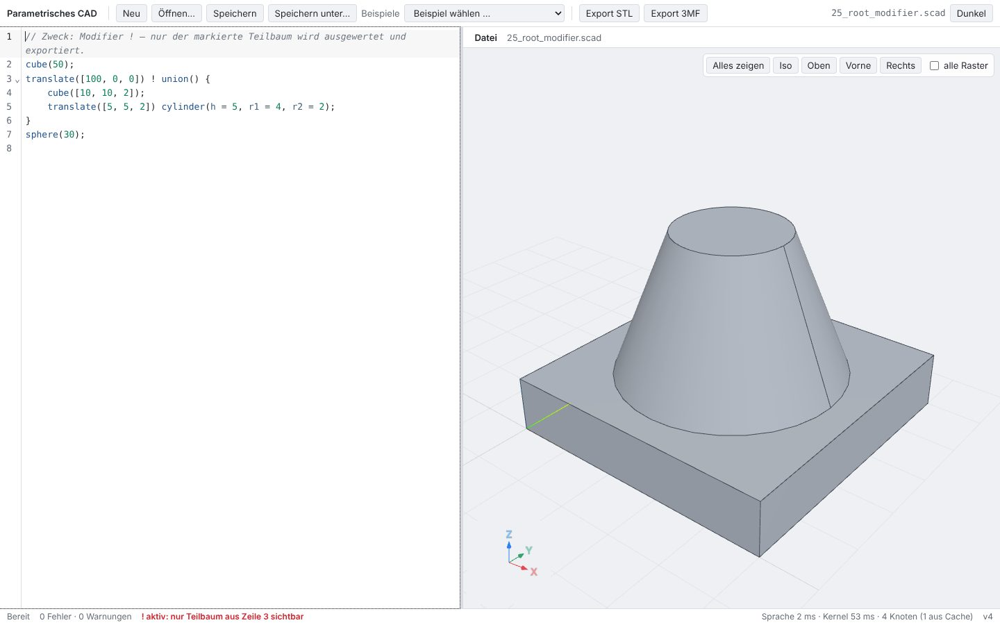
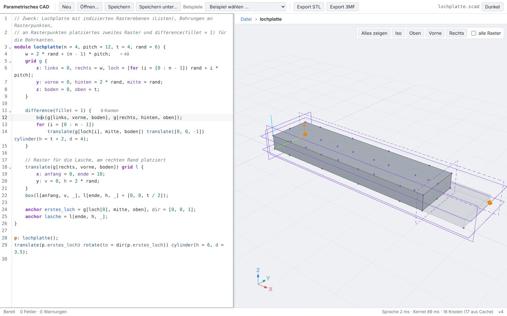
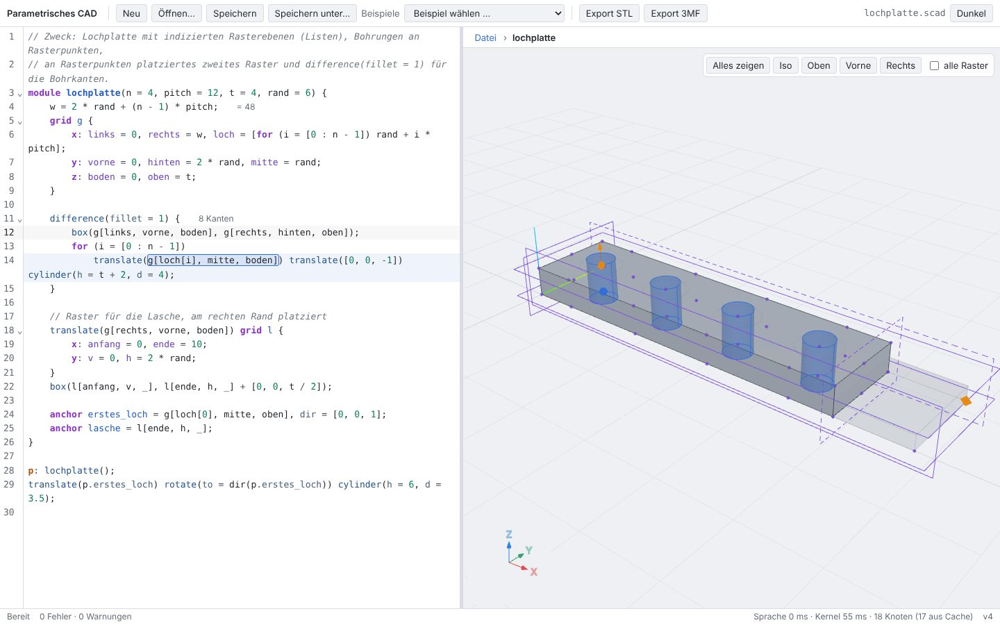
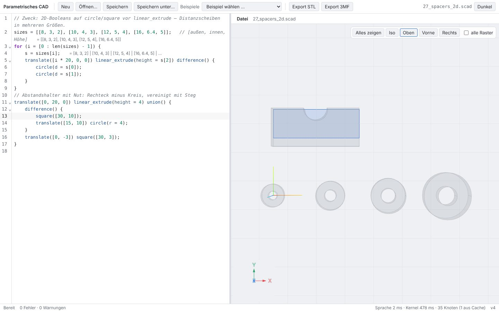

Test report 2 – UI phase A
1 Scope
This report covers the browser UI after phase A: the editor on the left, the 3D view with breadcrumb bar on the right, the status bar at the bottom. The engine (Rust, Wasm, SMLib kernel) runs in a web worker; the UI only interprets the scene description and loads meshes per node on demand.
- Editor: Lezer grammar (OpenSCAD with
grid,anchor,k:), diagnostics (red underline, line red or yellow, message at the end of the line), inline hints (values, "4 edges"),*lines grayed out, positions of old scenes viaChangeSet.mapPos. - 3D view: meshes per node with a cache keyed by
mesh_key, placement viadisplay_world, edges as lines, rotate/pan/zoom, "Show all", standard views, axis triad, ground. - Code → view: cursor (node full, rest dimmed), hover over a line, difference/intersection/fillet/chamfer/shell, modifiers
#%!*, transformations with coordinate triads before/after and an outline at the original position, 2D shapes as outline with a light fill. - View → code: hovering over a face highlights the line, a click sets the cursor, a double-click on a module instance jumps to the definition.
- Module context:
SetContextwhen the cursor is in a module definition, breadcrumb bar with a jump one level up. - Grids and anchors (read-only): planes at the edge of the bounding box, intersection points, literal solid / expression dashed, toggle "all grids", hover over a grid expression, anchors as diamonds with an arrow.
- Files and errors: autosave to IndexedDB, open/save, examples menu, export STL/3MF, syntax errors and watchdog.
2 Test environment
| Operating system | Linux 6.18.44-fc-v140 (x64) |
|---|---|
| CPU | Intel(R) Xeon(R) Processor @ 2.80GHz · 4 cores |
| Node.js | v22.22.0 |
| Browser | Chromium 141.0.7390.37 (headless, Playwright 1.56.1) |
| Graphics | WebGL via SwiftShader (software rendering, no GPU) |
| Window | 1440 × 900 px, device pixel ratio 1 |
| Build | Vite 8.3.5 production build, preview server (vite preview) |
| Libraries | React 19.3.1, three.js 0.186.1, CodeMirror 6.43.15, Zustand 5.0.16, Vitest 5.0.5 |
| Engine | cad_wasm_bg.wasm 1.16 MiB, smlib.wasm 4.85 MiB (each once in the build) |
| Source | Branch worktree-agent-a5a96375179179a1c, commit 15e78ec |
The end-to-end tests run against the production build. They wait for scene versions and the display state via the test hook window.__cad, not for fixed times. Hover and click in the view are real mouse events on the canvas; the hook only supplies a pixel under which a face of the requested line lies.
3 Scenarios (Playwright)
| ID | Scenario | Result | Duration | Check |
|---|---|---|---|---|
| S01 | Load: editor, view and first scene | passed | 1.9 s | Initial state: spec example gehaeuse.scad in the editor on the left, on the right the scene with ground, axis triad and the anchors of the named instance k (diamonds, with an arrow where dir is set). |
| S02 | Open example | passed | 2.3 s | Examples menu → spec/lochplatte.scad: the editor loads the file, after evaluation the view shows the plate with holes, tab and the anchor p.erstes_loch. |
| S03 | Cursor in line: node full, rest dimmed, transformation with coordinate triads | passed | 2.2 s | Cursor on translate(k.ecke) in line 22: subtree full at the target, as outline at the original position; coordinate triad dashed before, solid after, arrow from the old to the new origin; rest of the model dimmed. |
| S04 | Pixel check: dimming changes the rendering | passed | 2.0 s | Mean brightness of the view without selection 226.3, with cursor on line 22 234.3 (the dimmed rest is brighter). |
| S05 | Module context, difference: subtracted body red | passed | 1.9 s | Cursor in line 10 (difference) inside module gehaeuse: context switches to the module (breadcrumb "File › gehaeuse" (German UI: „Datei › gehaeuse“), own coordinate system, grid g shown); result full, subtracted box from line 12 red and semi-transparent. |
| S06 | Hover over line: node semi-transparent | passed | 2.0 s | Mouse over line 12 (inner box, subtracted): the body appears semi-transparent in the overall model, visible through the result; cursor is on line 11 (outer box full). |
| S07 | Hover over face highlights line, click sets cursor, double-click jumps to definition | passed | 2.8 s | Mouse over the face of the lid at k.ecke: line 22 in the editor is highlighted (face → tri_tags → tag_nodes → node → line). A click sets the cursor in line 22, a double-click on the enclosure jumps into module gehaeuse. |
| S08 | Breadcrumb bar: click jumps one level up | passed | 3.5 s | Module context gehaeuse: only the module in its own coordinate system with grid g (intersection points, planes used by the line). A click on "File" sets the cursor on the call k: gehaeuse(w = 60) (line 21) and shows the whole file again. |
| S09 | Modifiers #, %, *, ! | passed | 3.2 s | 24_modifiers.scad: # permanently red and semi-transparent (also as a subtracted body), % gray and semi-transparent as helper geometry, * invisible and line 7 grayed out. With 25_root_modifier.scad the status bar reports the active ! subtree. |
| S10 | Syntax error: last valid state stays visible | passed | 2.9 s | Input " ]" at the end of line 22: position underlined red, message at the end of the line, status bar "1 error" (German UI: „1 Fehler“); the view keeps showing the last valid state. After deleting it, the model is re-evaluated. |
| S11 | Failed operation: line red, message at end of line | passed | 3.3 s | difference(fillet = 20) on a 10 mm cube: fillet failed, line 1 red with a message at the end of the line; the view shows the body without fillet. |
| S12 | Export STL and 3MF | passed | 2.5 s | Export STL: gehaeuse.stl, 54 triangles, 2784 bytes (binary, 84 + 50·n). Export 3MF: gehaeuse.3mf (ZIP, 4486 bytes). The status bar reports the export. |
| S13 | Grid: used planes, all grids, hover over grid expression | passed | 4.4 s | Module lochplatte, toggle "all grids": planes as thin lines at the edge of the part's bounding box (literal solid, expression dashed), intersection points as dots. Without the toggle only the 6 planes of line 12; hovering over g[loch[i], mitte, boden] highlights the point. |
| S14 | Anchors of named instances | passed | 3.2 s | winkel_anker.scad: anchors of the named instances a and b as diamonds, with an arrow where dir is set. Hovering over a.boden_loch highlights this anchor; the cursor on a: winkel() highlights the three anchors of the instance. |
| S15 | Fillet zones blue, selected edges colored, inline hint | passed | 3.3 s | fillet_zonen.scad, cursor on fillet(2) in line 12: zones (grid line and sphere) blue and semi-transparent, selected edges orange; inline hint "2 zones · 2 edges" at the end of the line. |
| S16 | Positions of old scenes are carried along while typing | passed | 2.9 s | Two lines inserted at the top while the engine is blocked for 1.5 s: the cursor in line 24 still selects the node translate(k.ecke) (formerly line 22) in the old scene – source positions are carried along via ChangeSet.mapPos until the new scene arrives. |
| S17 | Watchdog reports a hung engine | passed | 3.1 s | Engine worker blocked for 5 s (test helper, watchdog 0.8 s): the worker is terminated and restarted, the status bar reports the error in red; the last scene stays visible, the next change is evaluated normally. |
| S18 | Autosave to IndexedDB | passed | 4.3 s | A change is saved to IndexedDB after 0.4 s; after reloading the page the changed text is back in the editor. |
| S19 | Dark theme and standard views | passed | 2.4 s | Dark theme, iso view, cursor on k: gehaeuse(w = 60): instance full, anchors of the instance highlighted, rest dimmed. |
| S20 | intersection and 2D shapes | passed | 4.0 s | 05_nested_booleans.scad, cursor on intersection(): cube and sphere semi-transparent, result full. 27_spacers_2d.scad, cursor on square([30, 10]): 2D shape as outline with a light fill in its plane (top view). |
| S21 | Open and save without File System Access API (upload and download) | passed | 1.3 s | Without the File System Access API: "Open…" (German UI: „Öffnen…“) uploads a file via the file dialog (teil.scad is evaluated), "Save" (German UI: „Speichern“) downloads the source unchanged. With the API (Chromium) the same functions run via showOpenFilePicker/showSaveFilePicker. |
| S22 | Measurements: keystroke to new scene, fps while rotating | passed | 12.2 s | Five changes of the literal in line 21: keystroke → new scene drawn, median 157 ms (in-app measurement). Rotation over 120 frames: 14 fps (SwiftShader, no GPU). |
4 Unit tests (Vitest)
| File | passed | Failed |
|---|---|---|
| web/src/editor/decorations.test.ts | 6 / 6 | – |
| web/src/editor/lang.test.ts | 42 / 42 | – |
| web/src/logic/context.test.ts | 5 / 5 | – |
| web/src/logic/display.test.ts | 15 / 15 | – |
| web/src/logic/grids.test.ts | 5 / 5 | – |
| web/src/logic/positions.test.ts | 5 / 5 | – |
| web/src/logic/sceneIndex.test.ts | 9 / 9 | – |
Logic without a browser: Lezer grammar on all examples, mapping code ↔ node (cursor, face → line, ambiguity, module context), display states, grid display, breadcrumb bar and jump to definition, editor decorations, mapping of old positions. Scenes as fixtures from the real engine (web/scripts/dump-scene.mjs).
5 Measurements
| Quantity | Value | Measurement |
|---|---|---|
| Load time until first scene | 867 ms | Navigation until the first draw of the complete scene of gehaeuse.scad (loading Wasm, evaluation, tessellation, rendering) |
| First evaluation | 113 ms | SetSource until complete scene (cold cache) |
| Keystroke → new scene (median) | 157 ms | In-app measurement: last change until the new scene is drawn; individual values 73, 131, 127, 250, 165, 157 ms |
| Keystroke → new scene, test view (median) | 315 ms | Playwright: keystroke until the scene is visible in the test hook (incl. 50 ms polling interval) |
| Evaluation (median) | 42 ms | SetSource until complete scene during the changes (warm cache) |
| Frame rate while rotating | 14 fps | 120 frames of camera rotation around the z axis, one full render per frame (SwiftShader) |
| Largest image file in the report | 140 KiB | JPEG, quality 82 |
Software rendering without GPU; on a desktop with a GPU the frame rates are considerably higher. The times include the evaluation in the worker (language + kernel) and loading the meshes.
6 Known limitations and deviations
- Handles, dragging, snapping and the parameter bar are not part of phase A; grids and anchors are only displayed.
- Hover over edges is resolved via the adjacent face (edges carry no node tags). Union children get a thin outline on hover, but not with the cursor.
- When the module context changes, the UI resends the source with a new version so that each scene version denotes exactly one evaluation (meshes are requested per version). This costs one additional language evaluation of a few milliseconds.
- In case of ambiguity (same content at several places, e.g. two lids), the location of the hit point within the node bounding boxes is used to disambiguate; if it remains ambiguous, all lines are highlighted.
- Grid expressions in loops (e.g.
g[loch[i], mitte, boden]) are reported once by the scene; on hover the point of the first iteration is highlighted. - The editor wraps long lines; hints at the end of a line can therefore move to a second screen line.
- The watchdog test blocks the worker via a test message; a real hanging kernel call was not reproduced.
- The measurements come from a headless Chromium with SwiftShader and are only meaningful relative to each other.
7 Screenshots
















